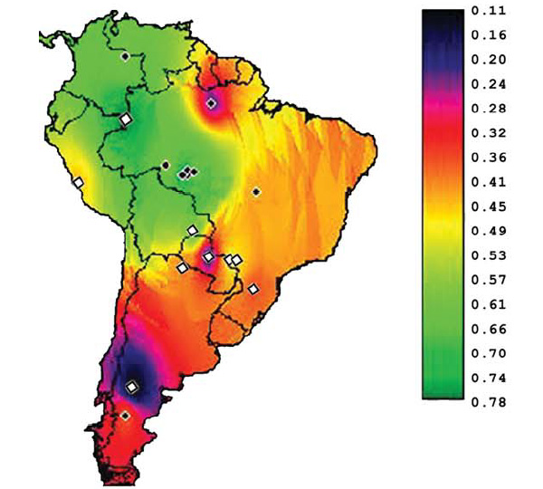

http://elementy.ru/news/431393
Александр Марков
"Ген авантюризма" чаще встречается у охотников-собирателей, чем у земледельцев

К теме «все национальности равны во всем», продвигаемой либерастами. Наглядно показано, что особенности группового (т.е. и национального) менталитета могут определяться генетикой. При этом ясно, что средовой фактор в таких группах работает в том же направлении.
Частота встречаемости «гена авантюризма» (аллеля 7R гена DRD4) в популяциях коренных южноамериканцев. Ромбиками обозначены места проживания 18 исследованных популяций (белые ромбики — оседлые земледельцы, черные — кочевые охотники-собиратели). Рисунок из обсуждаемой статьи в American Journal of Physical Anthropology
Один из вариантов (аллелей) гена DRD4 усиливает склонность людей к поиску новых впечатлений, импульсивности и гиперактивности. Проанализировав распределение частот аллелей DRD4 у южноамериканских индейцев, бразильские генетики обнаружили, что в племенах, которые в недавнем прошлом вели образ жизни охотников-собирателей, «ген авантюризма» встречается чаще, чем у оседлых народов, издавна занимавшихся сельским хозяйством. По-видимому, этот ген дает адаптивное преимущество при кочевом образе жизни, а переход к оседлости делает его фенотипические проявления скорее вредными, чем полезными.
Ген DRD4 является одним из самых полиморфных (вариабельных) генов в геноме человека. Белок, кодируемый этим геном, — дофаминовый рецептор D4 — работает в клетках мозга и определяет, наряду с другими белками, чувствительность определенных групп нейронов к «веществу удовольствия» — нейромедиатору дофамину (см.: Любовь и верность контролируются дофамином, «Элементы», 07.12.2005).
Варианты (аллели) гена DRD4, имеющиеся в генофонде человечества, отличаются друг от друга не только многочисленными однонуклеотидными заменами (single nucleotide polymorphisms, SNP), но и числом копий повторяющегося участка длиной в 48 пар нуклеотидов, расположенного в третьем экзоне гена. Этот участок может быть повторен от 2 до 11 раз. Соответствующие аллели (точнее, группы аллелей) называются 2R, 3R, 4R ... 11R. Чаще всего встречается вариант с четырьмя повторами (4R), который является исходным (предковым) вариантом данного гена у Homo sapiens. Немного реже встречаются аллели 2R и 7R. Известно, что рецептор с семью повторами (то есть белок, кодируемый аллелем 7R) реагирует на дофамин примерно вдвое слабее, чем варианты 2R и 4R (Asghari et al., 1995).
Аллель 7R в последние годы привлекает особое внимание исследователей. Его иногда называют «геном авантюризма», потому что, как оказалось, его носители имеют довольно четкие, статистически значимые поведенческие отличия от обладателей других вариантов гена DRD4. У носителей аллеля 7R в среднем сильнее, чем у других людей, выражено стремление к поиску новых ощущений (novelty-seeking behaviour), для них характерна повышенная импульсивность; кроме того, среди них чаще встречаются люди с «синдромом дефицита внимания и гиперактивности» (attention deficit hyperactivity disorder).
Необходимо помнить, что термин «ген авантюризма» (как и все подобные термины) вовсе не означает, что обладание аллелем 7R является необходимым и достаточным условием формирования такого сложного фенотипического признака, как авантюризм. Это всего лишь общепринятый генетический жаргон. Любой сложный фенотипический признак формируется в результате совместной работы множества генов и факторов среды (таких, например, как воспитание). Просто гену DRD4 так «повезло», что именно у него имеются аллельные варианты, обладатели которых статистически отличаются друг от друга по степени выраженности данного признака.
Частота встречаемости аллеля 7R в разных человеческих популяциях варьирует от 0 до 78%. В географическом распределении этого аллеля обнаружены крайне интересные закономерности. Чаще всего он встречается у американских индейцев, реже всего — у жителей Восточной Азии. Из европейских народов наибольшая доля носителей 7R характерна для ирландцев — народа, славящегося своей импульсивностью. Предполагают, что в Восточной Азии, где издавна существовали мощные централизованные государства, поведенческие признаки, характерные для носителей аллеля 7R, не давали преимуществ и были, скорее, вредны. В обществах индейцев, особенно кочевых охотников-собирателей, — наоборот, гиперактивность, импульсивность и активное поисковое поведение могли давать адаптивное преимущество.
Кроме того, имеется положительная корреляция между частотой встречаемости 7R и расстоянием от главных азиатских центров расселения до нынешнего ареала популяции. Возможно, это означает, что повышенное число «авантюристов» в племени способствовало далеким миграциям. Или в ходе далеких миграций носители 7R получали адаптивное преимущество и размножались эффективнее, чем люди с более уравновешенным нравом. Или каждый раз, когда надо было решать, поселиться здесь или идти дальше, носители 7R отправлялись в путь, а прочие оставались.
Для проверки этих увлекательных гипотез необходимы большие массивы данных по генетике различных человеческих популяций. Для строгих и окончательных выводов данных пока не хватает. Так, изменчивость гена DRD4 до сих пор была достаточно подробно изучена только в 5 популяциях североамериканских и 15 популяциях южноамериканских индейцев. При этом оставались «непокрытыми» некоторые ключевые территории, такие как Центральная и Южная Бразилия.
В статье бразильских генетиков, опубликованной недавно на сайте престижного журнала American Journal of Physical Anthropology, приведены новые данные по частотам аллелей DRD4 у трех коренных народов, проживающих в Центральной и Южной Бразилии: кайнганг (исследовано 144 хромосомы), гуарани-ньяндева (100 хромосом) и гуарани-кайова (Guarani-Kaiowa, 100 хромосом). Тем самым количество исследованных южноамериканских популяций было доведено до 18, а географическое «покрытие» континента стало достаточно равномерным, чтобы проверить одну из ключевых гипотез о связи между частотой встречаемости аллеля 7R и образом жизни народа.
Давно предполагалось, что склонность к рискованному «поиску новизны» (что характерно для носителей 7R) дает преимущество в условиях нехватки ресурсов или в сильно переменчивой среде. Именно в таких условиях существует большинство охотников-собирателей. Те же самые особенности поведения могут оказаться вредными для оседлых народов, практикующих интенсивное сельское хозяйство: их источники пищевых ресурсов куда более надежны и стабильны, и поэтому «здоровый консерватизм» им в общем случае более выгоден, чем импульсивные метания в поисках чего-то новенького.
Проанализировав все собранные к настоящему времени данные по южноамериканским индейцам, авторы получили результат, подтверждающий эту гипотезу. Оказалось, что частота встречаемости 7R заметно выше в популяциях, которые вплоть до недавнего времени вели образ жизни охотников-собирателей (10 популяций из 18), по сравнению с сельскохозяйственными племенами (8 популяций). У первых 7R встречается в среднем с частотой 58%, у вторых – 48%, причем это различие является статистически достоверным (P<0,001). Был обнаружен также широтный градиент: на юге континента 7R встречается реже, чем на севере, но эта закономерность, по всей видимости, имеет вторичный характер и объясняется просто тем, что большинство охотников-собирателей живет на севере, в бассейне Амазонки, а на юге преобладают земледельческие популяции.
Данных по североамериканским индейцам пока недостаточно для столь же достоверных выводов. Однако известно, что в Северной Америке частота встречаемости 7R несколько ниже, чем в Южной, и в целом ближе к тому, что наблюдается у оседлых (а не кочевых) южноамериканских народов. По-видимому, это связано с тем, что заселение Южной Америки было сопряжено с «бутылочным горлышком» численности и четкой дифференцировкой по темпераменту: лишь очень немногие из обитателей Северной Америки отправились заселять дикие просторы южного континента, и среди этих переселенцев, очевидно, преобладали носители «гена авантюризма». В дальнейшем, когда некоторые южноамериканские народы перешли к оседлости и производящему хозяйству, вектор отбора изменился и преимущество получили носители «неавантюрных» вариантов гена DRD4; в результате частота встречаемости 7R у таких народов несколько снизилась.
Для окончательной проверки гипотезы об адаптивном значении аллельных вариантов DRD4 и об их избирательном распространении под действием отбора необходимо выяснить, действительно ли при кочевом охотничье-собирательском укладе носители 7R лучше живут (и оставляют в среднем больше потомков), чем носители других аллелей, тогда как у оседлых земледельцев всё должно быть наоборот. Подобное исследование было проведено пока только одно, и не в Америке, а в Африке. Его объектом была народность ариаал (Ariaal people), проживающая в северной Кении. Полученные результаты полностью подтвердили теоретические ожидания: оказалось, что в группах, ведущих традиционный кочевой образ жизни, носители 7R питаются в среднем лучше носителей других аллелей, тогда как в группах, перешедших к оседлости, ситуация сменилась на обратную (Eisenberg et al., 2008).
Дополнительные подтверждения того, что аллель 7R действительно влиял на приспособленность людей и распространялся под действием отбора (а не за счет случайного дрейфа), были получены биоинформационными методами, то есть путем компьютерного анализа нуклеотидных последовательностей. Надежными признаками того, что тот или иной участок ДНК поддерживался отбором и быстро распространялся, являются повышенная доля значимых нуклеотидных замен по отношению к синонимичным заменам, а также низкий генетический полиморфизм в окрестностях рассматриваемого локуса (см. неравновесие по сцеплению). Оба эти признака характерны для аллеля 7R (Ding et al., 2002).
Биоинформационный анализ позволил заключить, что этот аллель появился в результате мутации 50–60 тысяч лет назад или немного раньше, а его первичное распространение в человеческих популяциях, вероятно, было связано с такой грандиозной «авантюрой», как выход сапиенсов из Африки и быстрое заселение Евразии, а затем и обеих Америк. Судьба «гена авантюризма» — отличный пример того, как эволюция поведенческих признаков под действием естественного отбора продолжалась в человеческих популяциях еще в недавнем прошлом, а возможно, продолжается и в наши дни.
Источник: Luciana Tovo-Rodrigues, Sidia M. Callegari-Jacques, M. Luiza Petzl-Erler, Luiza Tsuneto, Francisco M. Salzano, Mara H. Hutz. Dopamine Receptor D4 Allele Distribution in Amerindians: A Reflection of Past Behavior Differences? // American Journal of Physical Anthropology. 2010. Advance online publication.
См. также:
1) С. А. Боринская, Э. К. Хуснутдинова. Этногеномика: история с географией.
2) С. Боринская, Н. Янковский. Наша история в ДНК.